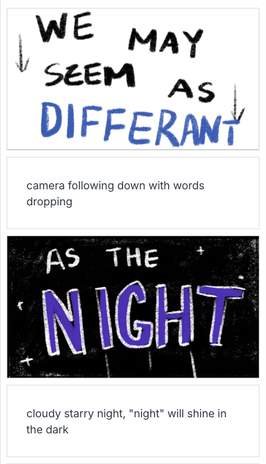
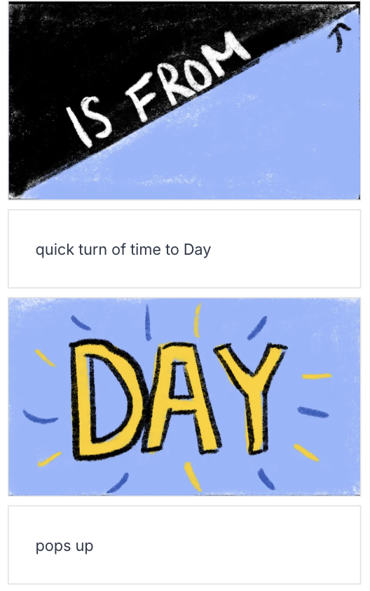
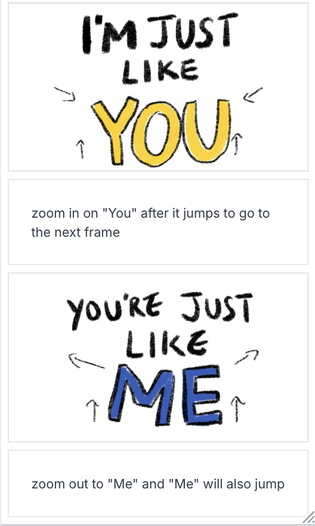
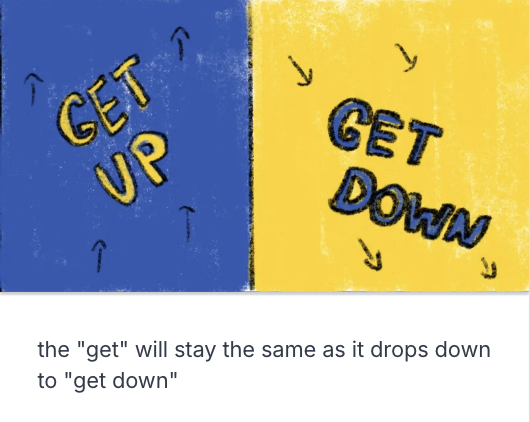
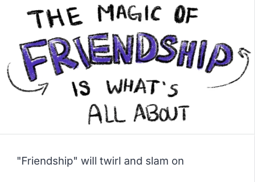
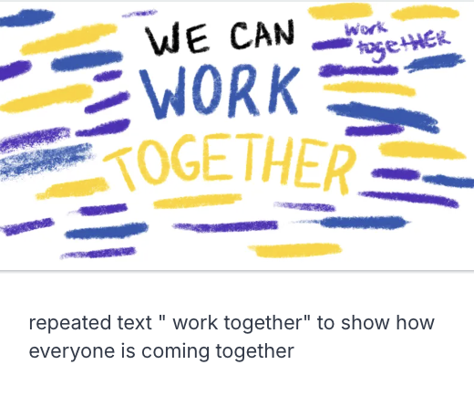
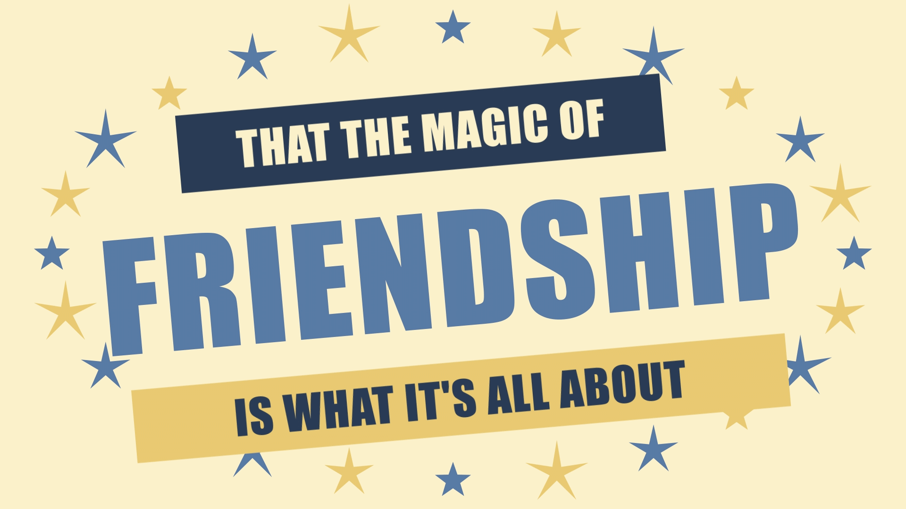
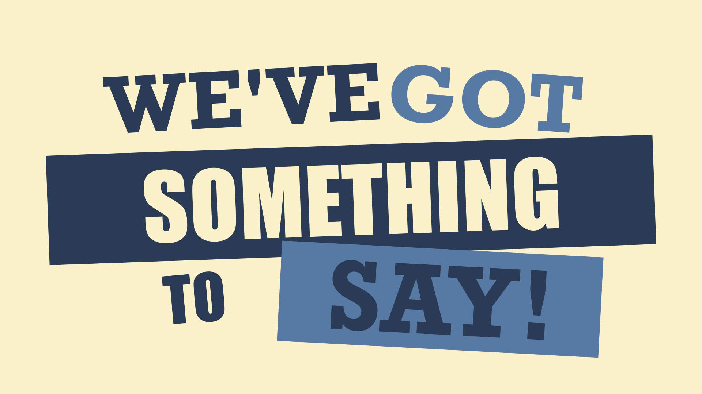
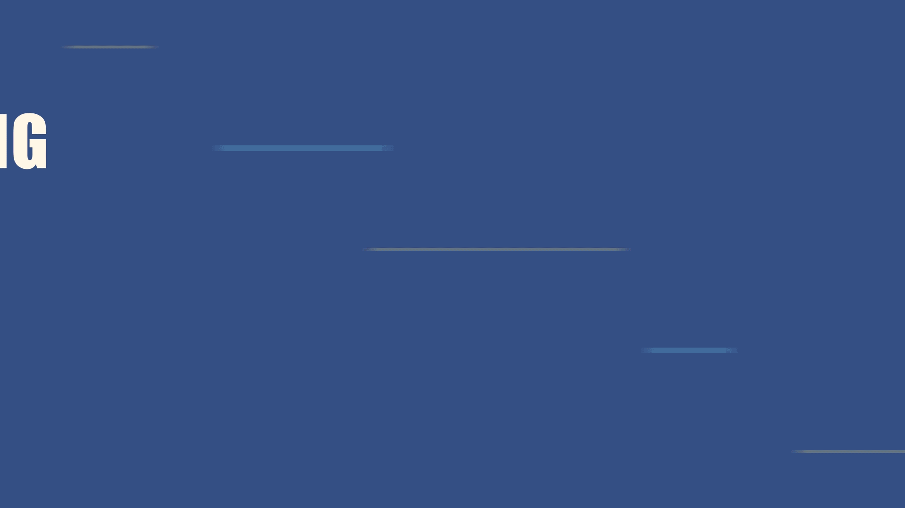

Helping Twilight
Win the Crown
A kinetic typography music video exploring individuality, unity, and collective movement.
Motion Graphics / Kinetic Typography / After Effects
Overview
For this project, I created a kinetic typography music video for “Helping Twilight Win the Crown” from My Little Pony: Equestria Girls. The animation uses typography, color, repetition, and movement to follow the song’s progression from school-spirit energy toward a larger idea of people coming together while maintaining their individuality.
Concept & Visual Direction
I originally started with a school spirit and campaign-inspired direction because that was what I first connected with from the setting and story of the song. I began with a more limited blue and yellow color palette to match that traditional school-spirit feeling.
As I continued working on the video, my understanding of the song started to influence the visuals more. To me, the song gradually becomes less about just helping Twilight win and more about seeing different people come together and work toward the same goal.
Because of this, I began introducing more colors, especially colors inspired by the Main Six characters. Purple also became more prominent because it represents Twilight, who helps everyone recognize that even though they may seem different, they are not as different as they think and can still come together.
Toward the final chorus, when more students join in, more colors, repeated words, and typography begin entering the scenes. The different colors represent different people and backgrounds, while bringing them together within the same composition represents unity and inclusivity.
The final animation grows visually alongside the song. What begins with a limited school-spirit visual system gradually becomes more colorful, layered, and energetic as more voices join in. Through that progression, I wanted the typography itself to communicate the idea that individuality and belonging do not have to contradict each other.
Beginning
Blue + Yellow
School spirit
More controlled typography
Development
Purple + Pink + Blue
More movement
More visual variation
Final chorus
Expanded color palette
Repeated typography
More elements entering the composition
Greater visual density
individual → collective
controlled → energetic
limited palette → expanded palette
Storyboard & Process
Before animating the final video, I planned how the lyrics, typography, movement, and transitions could work together across the song. The storyboard helped establish the pacing and gave me a structure for deciding where the visuals should become more energetic as additional voices join in.






Motion Moments


